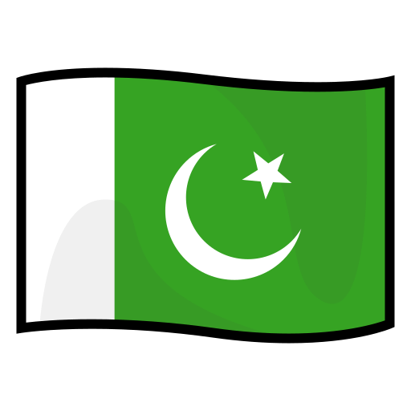

Pakistan is a country in South Asia with a population of over 220 million people, making it the fifth most populous country in the world. It was established on August 14, 1947, and is made up of four provinces, two territories, and a capital territory. Each region has its own distinct culture, language, cuisine, and landmarks. Wikipedia – Pakistan
| Province | Capital City | Famous Food | Famous Place |
|---|---|---|---|
| Punjab | Lahore | Biryani | Badshahi Mosque |
| Sindh | Karachi | Haleem | Clifton Beach |
| Khyber Pakhtunkhwa | Peshawar | Chapli Kabab | Khyber Pass |
| Balochistan | Quetta | Sajji | Hanna Lake |
| Gilgit Baltistan | Gilgit | Chapshuro | Hunza Valley |
Here are some key facts about Pakistan that give a broader picture of the country. CIA World Factbook – Pakistan
August 14, 1947
Islamabad
Over 220 Million
Urdu
Pakistani Rupee (PKR)
K2 – 8,611 meters